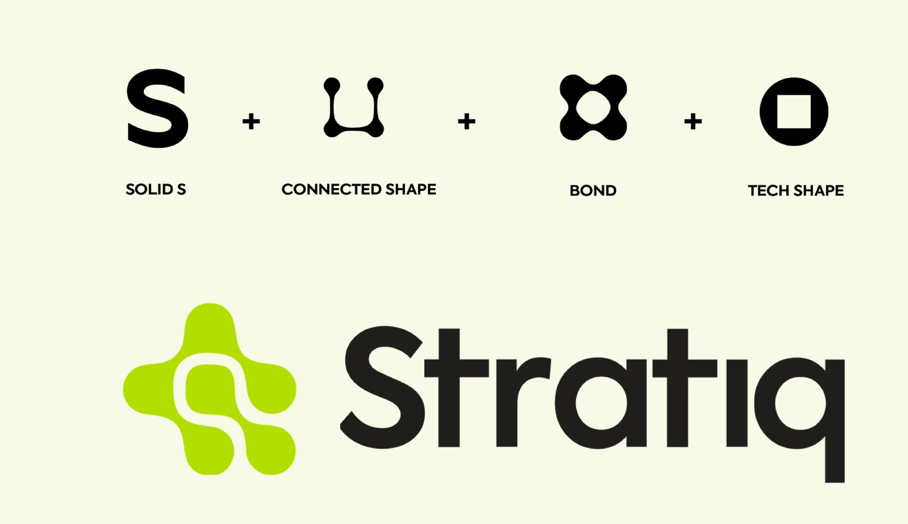
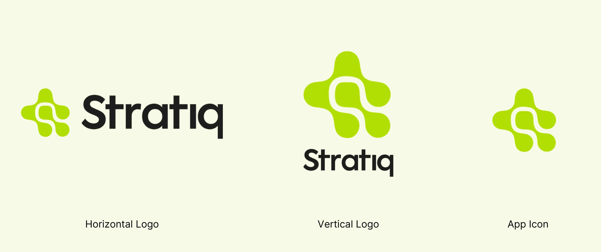
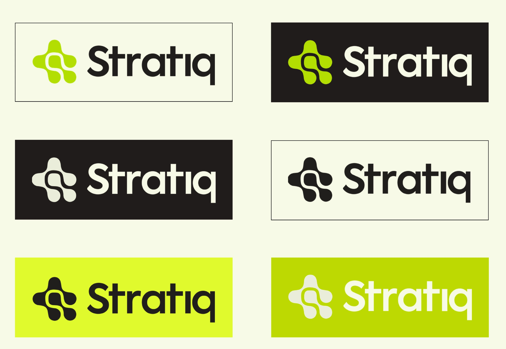
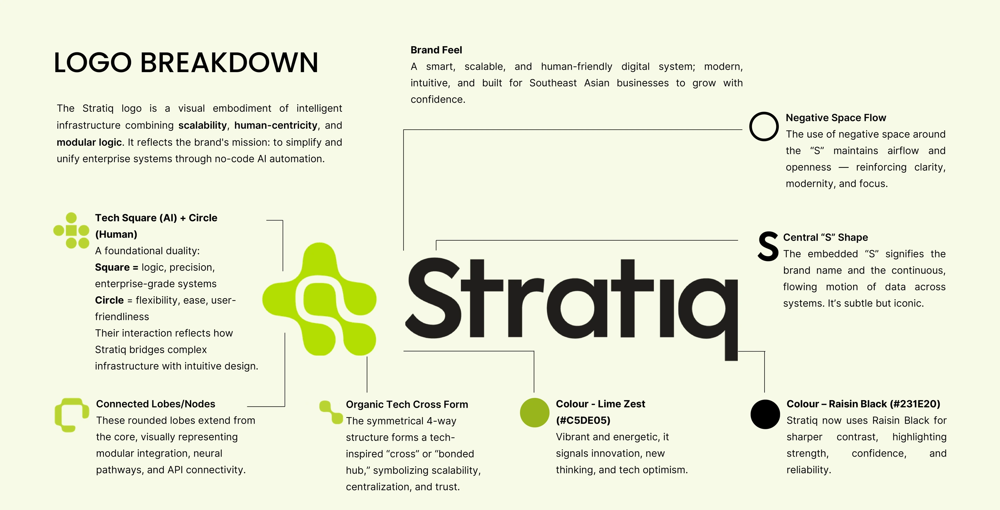
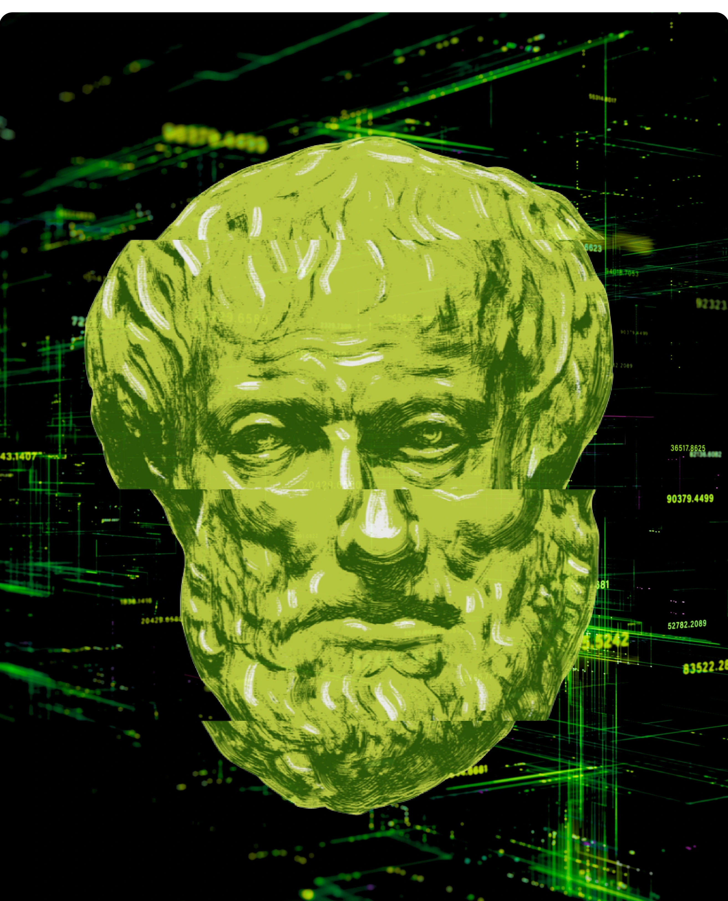
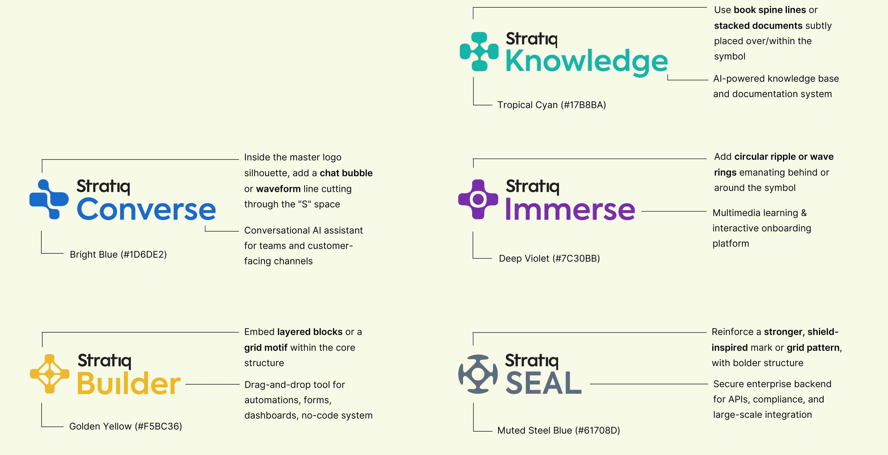
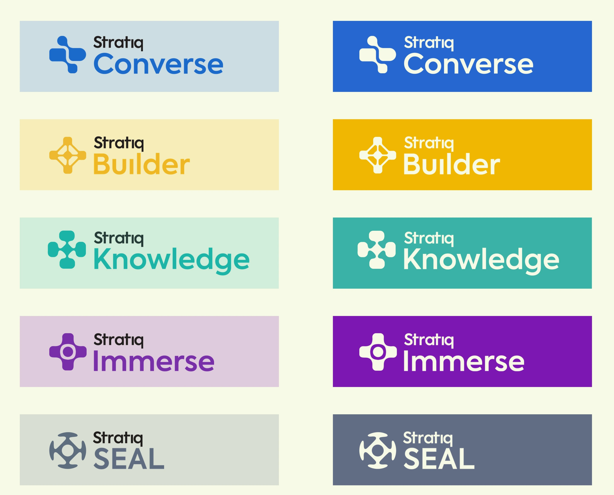
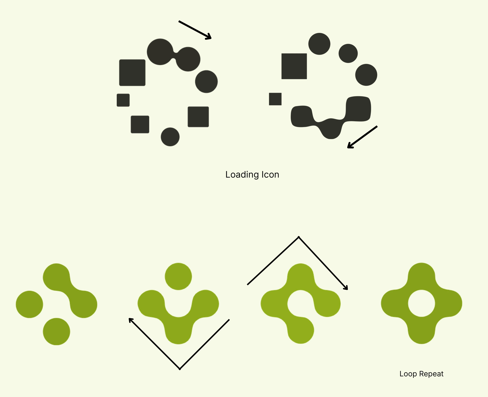
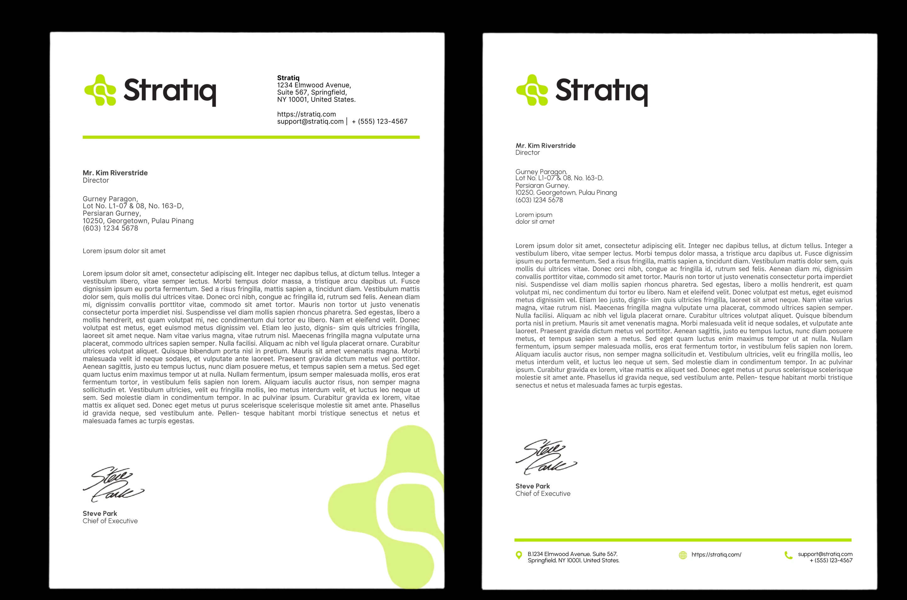
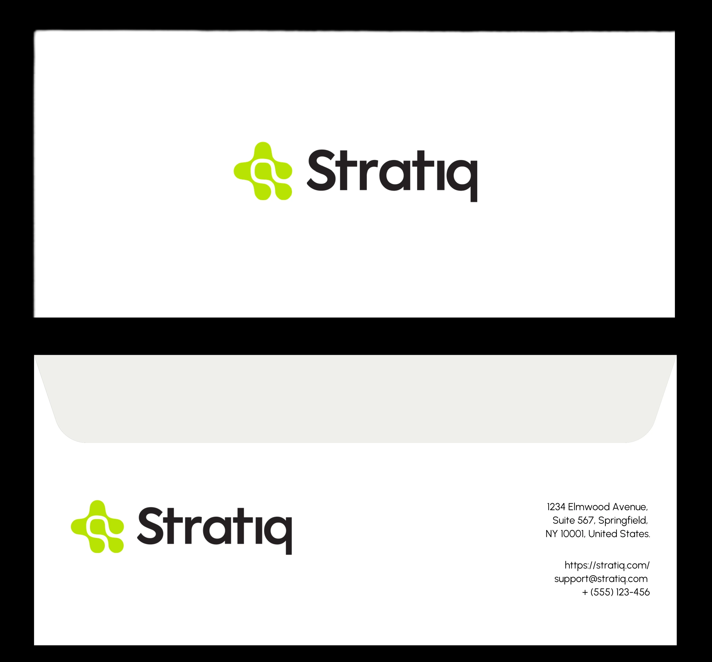

Stratiq
A logo system, five product marks and a brand book for an AI automation platform built for regulated industries.
Stratiq builds no-code AI automation for sectors that cannot afford a black box: healthcare, aerospace, manufacturing, agriculture. The identity had to read as intelligent and accountable at once.


The colours of Stratiq


Four rounded lobes around a hidden S: modules joined into one system. Lime Zest carries the energy; Raisin Black carries the weight.

Each product gets its own mark from the same geometry and its own colour: Converse, Builder, Knowledge, Immerse and SEAL, the engine underneath.



On paper the system stays quiet: white and black, with Lime Zest kept for one field and one line.

